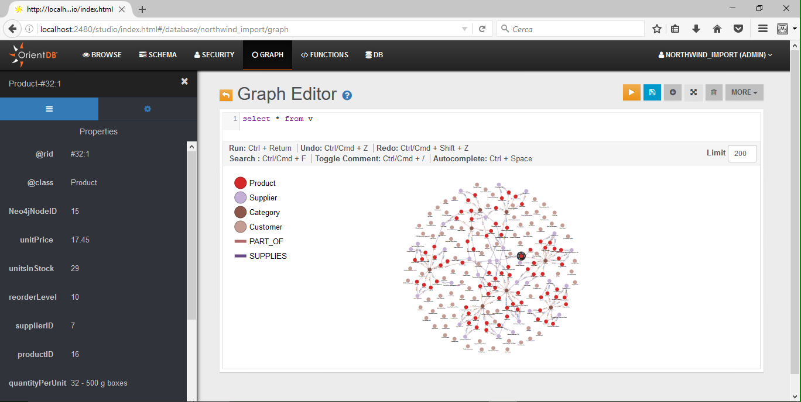
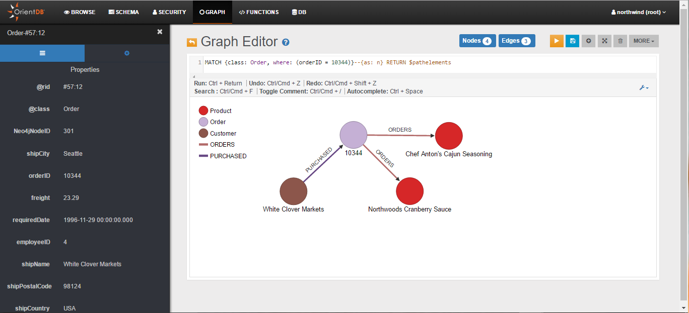

search: keywords: ['neo4j to orientdb importer', 'import', 'Neo4j', 'migration', 'northwind', 'cypher', 'tutorial']
Tutorial: Importing the northwind Database from Neo4j
In this tutorial we will use the Neo4j to OrientDB Importer to import the Neo4j northwind example database into OrientDB.
For general information on the possible Neo4j to OrientDB migration strategies, please refer to the Import from Neo4j section.
Neo4j and Cypher are registered trademark of Neo Technology, Inc.
Preparing for the migration
Please download and install OrientDB:
$ wget -O orientdb.devmunity-tp2-3.2.42.tar.gz
$ tar xvf orientdb.devmunity-tp2-3.2.42.tar.gzDownload and install the Neo4j to OrientDB Importer:
$ wget http://central.maven.org/maven2/com/orientechnologies/orientdb-neo4j-importer/3.2.42/orientdb-neo4j-importer-3.2.42.tar.gz
$ tar xfv orientdb-neo4j-importer-3.2.42.tar.gz -C orientdb-community-3.2.42 --strip-components=1 For further information on the OrientDB's installation, please refer to this section.
For further information on the Neo4j to OrientDB Importer installation, please refer to this section.
Starting the migration
Assuming that:
-
/home/santo/neo4j/neo4j-community-3.0.7/libis the full path to the directory that includes the Neo4j's libraries -
/home/santo/data/graph.db_northwindis the full path to the directory that contains the Neo4j's northwind database -
/home/santo/orientdb/orientdb-community-2.2.12/databases/northwind_importis the full path to the directory where you would like to migrate the northwind database -
that no Neo4j and OrientDB servers are running on those directories
you can import the northwind database with a command similar to the following:
./orientdb-neo4j-importer.sh \
-neo4jlibdir /home/santo/neo4j/neo4j-community-3.0.7/lib \
-neo4jdbdir /home/santo/neo4j/data/graph.db_northwind \
-odbdir /home/santo/orientdb/orientdb-community-2.2.12/databases/northwind_import
For further information on how to use the Neo4j to OrientDB Importer, please refer to this section.
Migration output
The following is the output that is written by the Neo4j to OrientDB Importer during the northwind database migration:
Neo4j to OrientDB Importer v.2.2.12-SNAPSHOT - Copyrights (c) 2016 OrientDB LTD
WARNING: 'o' option not found. Defaulting to 'false'.
Please make sure that there are no running servers on:
'/home/santo/neo4j/data/graph.db_northwind' (Neo4j)
and:
'/home/santo/orientdb/orientdb-community-2.2.12/databases/northwind_import' (OrientDB)
Initializing Neo4j...Done
Initializing OrientDB...Done
Importing Neo4j database:
'/home/santo/neo4j/data/graph.db_northwind'
into OrientDB database:
'/home/santo/orientdb/orientdb-community-2.2.12/databases/northwind_import'
Getting all Nodes from Neo4j and creating corresponding Vertices in OrientDB...
1035 OrientDB Vertices have been created (100% done)
Done
Creating internal Indices on property 'Neo4jNodeID' on all OrientDB Vertices Classes...
5 OrientDB Indices have been created (100% done)
Done
Getting all Relationships from Neo4j and creating corresponding Edges in OrientDB...
3139 OrientDB Edges have been created (100% done)
Done
Getting Constraints from Neo4j and creating corresponding ones in OrientDB...
0 OrientDB Indices have been created
Done
Getting Indices from Neo4j and creating corresponding ones in OrientDB...
5 OrientDB Indices have been created (100% done)
Done
Import completed!
Shutting down OrientDB...Done
Shutting down Neo4j...Done
===============
Import Summary:
===============
- Found Neo4j Nodes : 1035
-- With at least one Label : 1035
--- With multiple Labels : 0
-- Without Labels : 0
- Imported OrientDB Vertices : 1035 (100%)
- Found Neo4j Relationships : 3139
- Imported OrientDB Edges : 3139 (100%)
- Found Neo4j Constraints : 0
- Imported OrientDB Constraints (Indices created) : 0
- Found Neo4j (non-constraint) Indices : 5
- Imported OrientDB Indices : 5 (100%)
- Additional created Indices (on vertex properties 'Neo4jNodeID') : 5
- Total Import time: : 29 seconds
-- Initialization time : 7 seconds
-- Time to Import Nodes : 6 seconds (181.67 nodes/sec)
-- Time to Import Relationships : 7 seconds (459.79 rels/sec)
-- Time to Import Constraints and Indices : 4 seconds (1.21 indices/sec)
-- Time to create internal Indices (on vertex properties 'Neo4jNodeID') : 4 seconds (1.22 indices/sec)
Connecting to the newly imported Database
General information on how to connect to a newly imported database can be found in this section.
The following is a partial visualization of the northwind database done with the Graph Editor included in the OrientDB's Studio tool:

As you can see from the Limit field, the visualization is limited to 200 vertices.
The following, instead, is the graph returned by the following MATCH query (the query returns all nodes connected to the Order with orderID 10344):
MATCH {class: Order, where: (orderID = 10344)}--{as: n} RETURN $pathelements

From Studio's Schema Manager, you can check all imported Vertex Classes (node Labels in Neo4j), Edge Classes (Relationship Types in Neo4j), and Indexes:

V and E are special classes: they include all Vertices and all Edges.